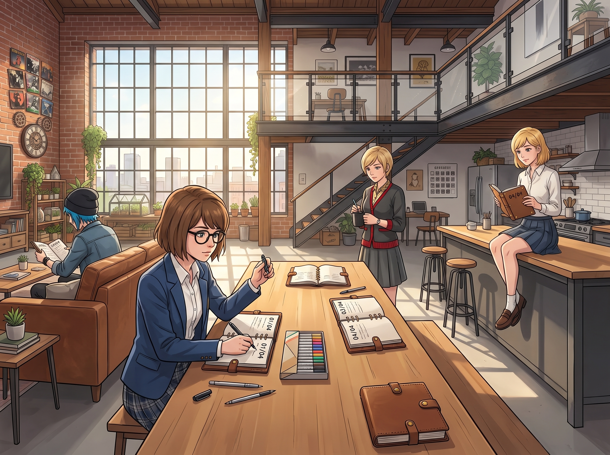

末頁的心裡話

四本裝訂好的皮革小冊子攤在長桌中央，黃銅螺栓在午後陽光下泛著溫潤的暗金色。
「既然是『私人典藏版』，」Max 抱著一盒彩色油性筆和勾線筆放在桌上，推了推黑框眼鏡，「按照傳統，我們得像畢業紀念冊那樣，把四本書輪流傳遞一圈，在彼此那一本的末頁寫下寄語——寫的時候誰都不准偷看。」
「哈，高中生的小把戲。」Chloe 嘴上嗤之以鼻，手卻以極快的速度抽走了 Max 的「02/04」號紀念冊，大長腿一邁坐到了沙發的最遠端，用寬闊的後背把桌面擋得嚴嚴實實。
Victoria 挑起一邊眉毛，優雅地挑了 Kate 的那本「03/04」，端著黑咖啡走向陽台的藤椅；Kate 則抱著 Victoria 的「04/04」，乖巧地坐在中島台邊緣；Max 捧著 Chloe 的「01/04」，深吸了一口氣，拔開了筆帽。
客廳裡頓時只剩下筆尖在厚磅棉紙上摩擦的沙沙聲，以及偶爾傳來的竊笑與咳嗽聲。
十五分鐘後，四本小冊子在桌面完成了一整輪無聲的秘密流轉，重新回到了各自的主人手中。
四個人盤腿圍坐在客廳厚實的羊毛地毯上，各自翻到了最後那張帶著毛邊的厚棉紙封底。
Chloe 的 01/04 號紀念冊末頁
Max 的筆跡（溫潤整齊的藍墨水）：
「給我的首席機械師兼冒險搭檔：謝謝妳每一次毫不猶豫地踩下油門，無論是去風暴邊緣，還是來到這座天台。妳的雙手能修好全世界最頑固的發動機，也修好了我鏡頭裡的所有畫面。永遠留在我的對焦框裡，不要離開。—— Max」
Kate 的筆跡（纖細規整，旁邊畫了一隻銜著扳手的小白鴿）：
「親愛的 Chloe：謝謝妳為我打造的工具箱，更謝謝妳總是像一堵不會倒塌的牆一樣擋在我們所有人身前。願上帝保佑妳那顆比任何金屬都柔軟的心。—— Kate」
Victoria 的筆跡（行雲流水的燙金花體字）：
「Price：妳的皮夾克依然充滿了廉價汽油味，但不得不承認，妳敲打金屬的技術勉強配得上我的品味。警告：如果妳敢把這本紀念冊扔進後斗沾上機油，我會親手用游標卡尺夾碎妳的耳釘。—— V.C.」
Chloe 盯著那些字跡看了很久，嘴角瘋狂上揚，最後用力揉了揉發酸的鼻子，把書緊緊夾在腋下，粗聲粗氣地掩飾：「靠……棉紙的灰塵真他媽嗆眼睛。」
Max 的 02/04 號紀念冊末頁
Chloe 的筆跡（狂草大字，佔了大半個版面，附贈藍色眼瞎笑臉）：
「給我的長官 Maxine：永遠別放下妳的相機，考菲爾德。如果世界試圖把光奪走，老娘就去把太陽的電路給妳重新接上。妳是我這輩子遇過最棒的奇蹟，沒有之一。—— 妳的專屬破壞狂 Chloe」
Victoria 的筆跡：
「Caulfield：西雅圖青年雙年展的推薦信我已經簽署了。別再露出那種唯唯諾諾的草食動物表情，妳的才華比妳想像的更具侵略性。還有，那副黑框眼鏡很適合妳，不用換。—— Victoria」
Kate 的筆跡：
「Max：是妳在最黑暗的時候教會我看見微光。看著妳現在站在展廳中央自信微笑的樣子，這是我見過最美的奇蹟。永遠愛妳。—— Kate」
Max 靠在沙發邊緣，眼眶泛紅，黑框鏡片上悄悄蒙上了一層水霧。
Kate 的 03/04 號紀念冊末頁
Chloe 的筆跡：「Marsh 大天使：誰要是敢踩壞天台的一片薄荷葉，老娘就用 19 號重型套筒扳手幫他重新排列臉部骨骼。繼續種妳的花，這裡有我罩著。」
Victoria 的筆跡：「Kate：妳調配的精油已經被我身邊最挑剔的畫廊名媛們列為私藏清單了。保持妳的純粹，這是這座城市最昂貴的奢侈品。」
Max 的筆跡：「親愛的 Kate：天台因為有妳才成為了真正的家。謝謝妳用泥土、花草和溫柔，把我們所有的毛刺都撫平了。」
Victoria 的 04/04 號紀念冊末頁
Chloe 的筆跡：「傲嬌大小姐：少喝點苦得要命的黑咖啡，多吃點老娘烤的焦香五花肉。以及……謝了，那套瑞士刻刀真的好用到爆炸。」
Max 的筆跡：「Victoria：謝謝妳總是站在最前面替我們擋開所有質疑。摘下防備的妳，是鏡頭裡最動人、最真實的畫面。」
Kate 的筆跡：「給 Victoria：我知道妳總是默默為大家安排好一切。願這間 Loft 永遠是妳疲憊時可以安心卸下高跟鞋的地方。」
Victoria 垂下眼眸，手指在那些墨跡上停留了很久，指尖微微有些顫抖。她迅速端起咖啡杯抿了一口，微微仰起頭，將眼底那一抹轉瞬即逝的水光不著痕跡地壓了下去，隨後輕輕合上厚實的皮革封面，發出了一聲清脆的「啪嗒」聲。
四本小冊子並排擺放在長桌中央，封皮上的黃銅螺栓在斜陽下閃著溫暖的光。
沒有人說話，客廳裡只有窗外拂過天台香草的微風聲。四個女孩並肩靠在一起，在波特蘭初夏漸深的暮色裡，靜靜感受著這份比任何金屬都堅固、比任何影像都鮮活的無聲羈絆。